This lab consisted of setting up a honeypot in Azure and using the virtual machine's logs to build a map based on where the attackers' IP addresses were from.
Additionally, I added an interface that showed the percentage of attacks from each region and an incident generation rule.
DISCLAIMER:Most of this lab was developed following a guide created by Josh Madajor, which can be found in the References section. The parts that I worked on additionally are the percentage map and incident generation rule.
** To do this, we first need to have an Azure account. In this case the account was created using a free subscription. **
Inside the Azure main interface, we search for 'Resource Groups' and go to the corresponding interface.
Once we're in the Resource Groups interface, we click on '+ Create' and input the required data. For this exercise I used the second location of East US.
After the data is complete and correct, we click on 'Review + Create'
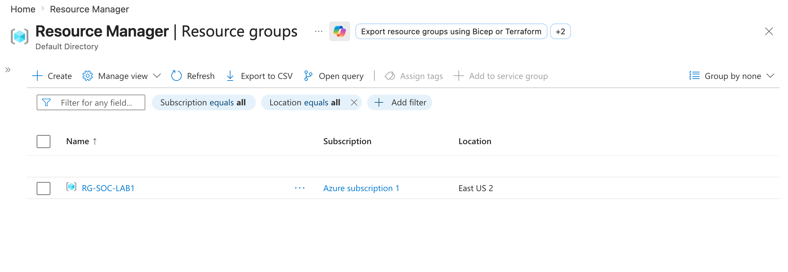
Back in Azure's home page, we search for 'Virtual Networks', go to the corresponding interface, and select '+ Create'.
We add the VNet's name and ensure the Region is the same as the RG.
Finally, we select 'Review + create'
** We leave all other configurations as default for 'Security', 'IP addresses', and 'Tags', but it's still useful to check the complete VNet's configuration **
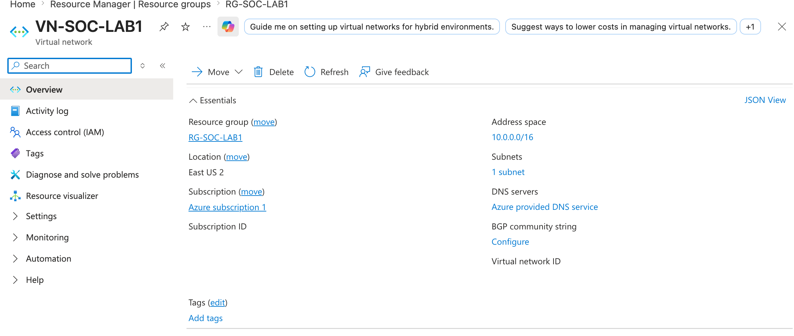
Just like in the previous steps, we go to the 'Virtual machines' interface and select '+ Create' > 'Virtual machine.'
We add the RG and name the VM
** It's not recommended for the VM to be called in a similar way as the rest of the Resource Group's resources because the attackers might see it. So, I called it something similar to what a business would call it ('ADMON-NET-WEST-2'). **
As for the rest of the configuration:
In the Disk section:
In the network section:
We skip Management Configuration.
Finally, in the Monitoring section:
After verifying all data is correct, we select 'Review + create'
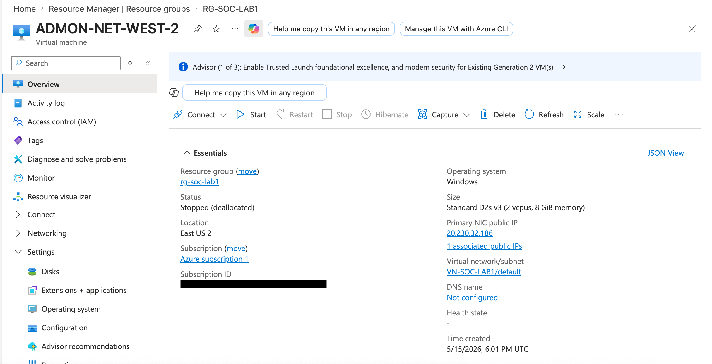
We go to our Resource Groups page and search for the resource that has the .nsg extension
** For inbound rules, only the Remote Desktop Protocol(RDP) is initially allowed**
Delete the inbound rule with 300 - RDP, then go to 'Settings' > 'Inbound security rules' > '+ ADD'
Change 'Destination Port' to '*' (ANY) and name the rule and select 'ADD'.
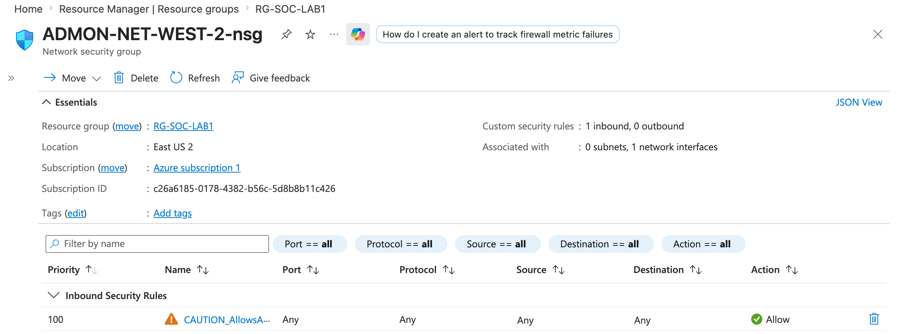
Go to the Virtual machines interface and select the VM created for this exercise
Now we connect remotely to our VM.
** Since I have Mac, I had to use an app called 'Windows App' to connect to the Virtual Windows Machine, but for devices with Windows OS this can be done using the 'Remote Desktop Connection (RDP)' app. **
In the 'Windows App' application, we select 'Add PC' and put the VM's public IP as the name
Once inside the VM, we search for 'wf.msc' (Windows Defender), select 'Windows Defender Firewall Properties', and Turn all firewall 'Profile' states off > 'Apply' > 'Ok'
If we ping the public IP we can now see the VM is reachable
** NOTE: If we try to access with wrong credentials, we can see those logs in 'Event Viewer' > 'Security'. **
We go to the 'Log Analytics Workspaces' interfac and click on '+Create'. Then, fill in the required parameters.
In the 'Microsoft Sentinel' interface (which is a SIEM), create a link to the Log analytics workspace
** Now the log workspace will be linked to the SIEM **
To connect the VM to LAW through Sentinel:
In Sentinel, go to 'Content Management' > 'Content Hub' > 'Install Windows Security Events' > 'Manage Windows Security Events' > Check 'WSE via AMA' (Azure Monitoring Agent)
Open the Connector Page and create a data collection rule to forward the logs and grant them access to the SIEM
In the 'Resources' interface, select our VM. Leave the next tabs as they are and then select 'Create'.
** Simultaneously, we can see in the VM interface that the Connector is being installed. **
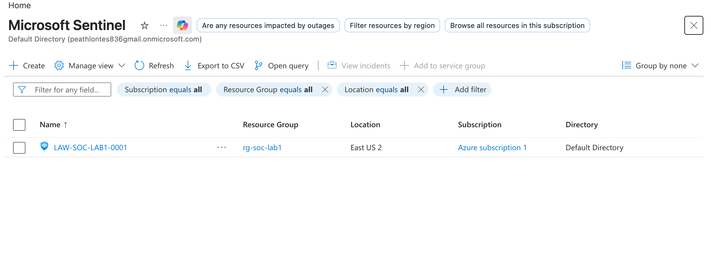
To see logs:
In 'Logs Analytics Workspace', go to 'Logs' > 'Tables' and search 'SecurityEvent'
To add more specific parameters, set it to KQL mode
** To only see certain parameters, use '| project {list of params}', or to only get a certain user, '| where Account == '{acount name}''**
** To search the location of an IP address: https://ipinfo.io/{ip address} **
To link IP address and its origin country, upload .csv file with IP-location equivalences to Azure. I obtained it from the video's description (check the References section of this page)
In Sentinel, go to the Sentinel instance > 'Configuration' > 'Watchlist'.
It will redirect to Windows Defender. There, go to 'Microsoft Sentinel' > 'Configuration' > 'Watchlist' > '+ New'.
In Sentinel--which will redirect to Defender--, select 'Threat management' > 'Workbooks' > 'Add workbook' > 'Edit'
Remove all of the elements, select 'Add query'/'Add data source + visualization' and go to 'Advanced editor'.
In the advanced editor I pasted the data contained in the map.json file that cand be found in the video's description.
Select 'Done editing' (at the top)
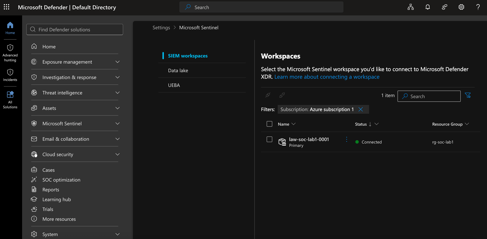
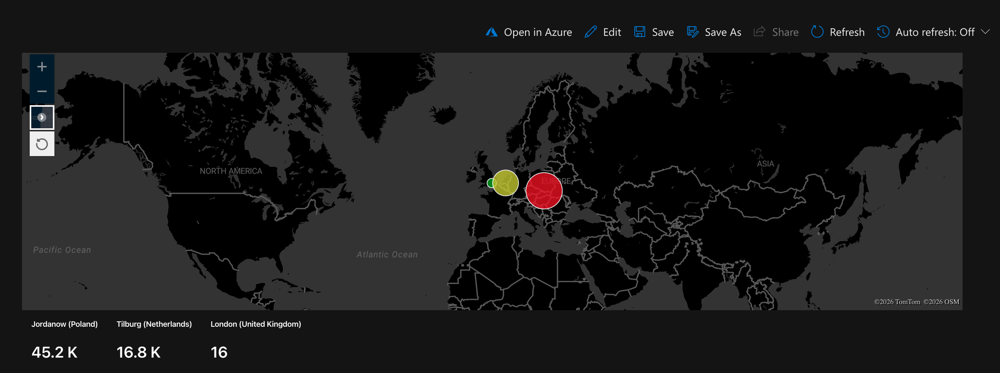
In this case I created a diagram with the percentage of attacks per country.
To do this I followed the same steps as the previous step, except I selected 'Pie chart' as the type.
For the input in the advanced editor:
let IPGeoMap = _GetWatchlist("geoip");
let TotalEvents = toscalar( SecurityEvent
| where EventID == 4625
| count ); SecurityEvent
| where EventID == 4625
| evaluate ipv4_lookup(IPGeoMap, IpAddress, network)
| summarize FailureCount = count() by countryname
| extend Percentage = round(todouble(FailureCount) / todouble(TotalEvents) * 100, 2)
| project country = tostring(countryname), Percentage
| order by Percentage desc
This essentially generates a Pie chart based on the amount of failed login attempt per country. The output is then converted to a percentage
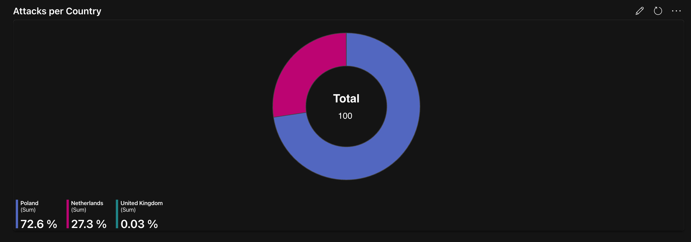
To generate incidents, I went back to Sentinel > Configuration > Analytics > Create Scheduled Query Rule
In this case it would only generate an incient if there was a failed login attempt, but would focus on persistence attacks.
Here's how the rule ended up looking:
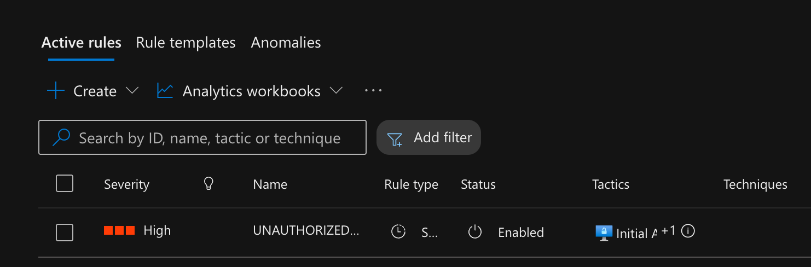
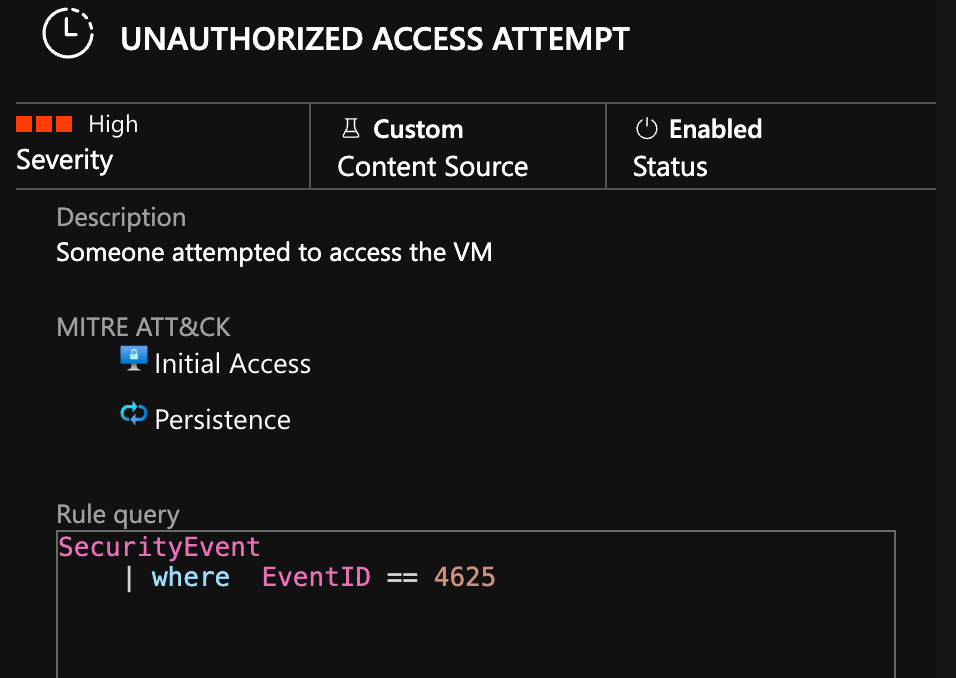
Within the first few hours there were already a couple of attacks.
After leaving the VM running for more than 8 hours, this was the result:
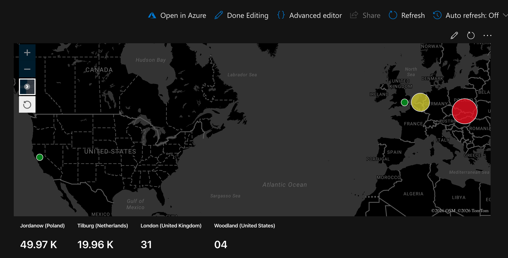
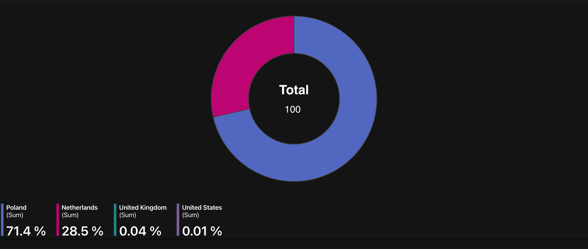
** Take into account the incidents are grouped and each of these may contain up to 150 similar incidents **
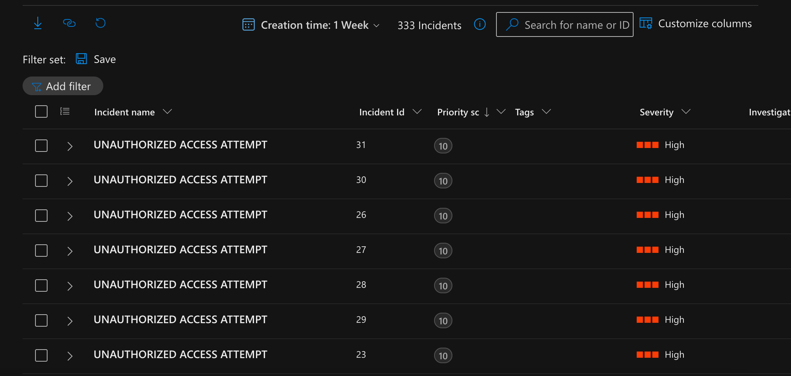
'Cyber Home Lab from ZERO and Catch Attackers! Free, Easy, and REAL (Microsoft Sentinel 2025)' by Josh Madajor - https://www.youtube.com/watch?v=g5JL2RIbThM
'Create Incidents from alerts' by Microsoft: https://learn.microsoft.com/en-us/azure/sentinel/create-incidents-from-alerts